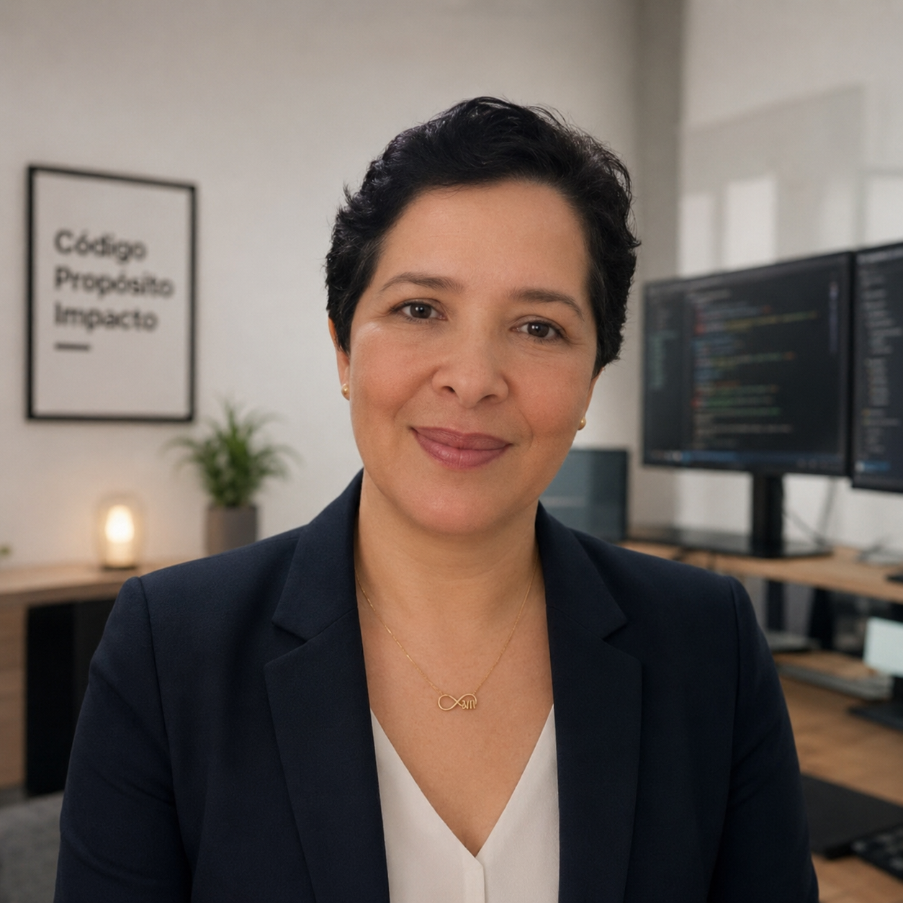

"Tecnologia sem pressa, evolução sem culpa"
Olá, eu sou Ieda Renata 💚
Sou servidora pública, mãe de dois filhos, sendo um autista, apaixonada por aprendizado contínuo e pela capacidade que a tecnologia tem de transformar vidas.
Assim como muitas mulheres, vivi diferentes fases profissionais e pessoais. Entre desafios, responsabilidades familiares e a busca por crescimento, descobri que nunca é tarde para recomeçar. Aos 40+, decidi mergulhar no universo da tecnologia, da programação e da inteligência artificial, construindo uma nova trajetória profissional sem abandonar tudo o que aprendi ao longo da vida.
Este blog nasce da minha experiência real: a de uma mulher que acredita que conhecimento, persistência e coragem podem abrir portas em qualquer idade.
💡 Por Que Comecei
Comecei este projeto porque senti falta de conteúdos que representassem mulheres reais em processo de transformação profissional.
Durante minha jornada de estudos em tecnologia, percebi que muitas pessoas acreditam que programação, inteligência artificial e carreiras técnicas são áreas reservadas apenas para jovens ou profissionais que começaram cedo. Minha própria experiência mostrou exatamente o contrário.
Além disso, a convivência com meus filhos, especialmente com meu filho autista, me ensinou sobre adaptação, resiliência, empatia e aprendizado constante. Essas experiências me inspiraram a compartilhar conhecimento, desafios, conquistas e descobertas que possam ajudar outras pessoas em seus próprios caminhos.
Este espaço é uma forma de mostrar que recomeçar é possível.
🎯 Objetivo
O objetivo deste blog é compartilhar conhecimento, experiências e oportunidades para pessoas que desejam construir uma nova carreira na área de tecnologia.
Aqui você encontrará conteúdos sobre programação, inteligência artificial, automação, ferramentas digitais, aprendizado contínuo, produtividade e desenvolvimento profissional.
Também quero abordar temas relacionados à migração de carreira após os 40 anos, maternidade atípica, inclusão, acessibilidade e os desafios reais enfrentados por quem busca crescimento profissional enquanto equilibra diversas responsabilidades.
Mais do que um blog sobre tecnologia, este é um espaço sobre transformação, aprendizado e possibilidades.
Ficou com alguma dúvida ou quer trocar uma ideia? Entre em contato! Vou adorar te conhecer. 💚